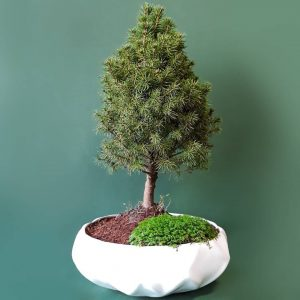
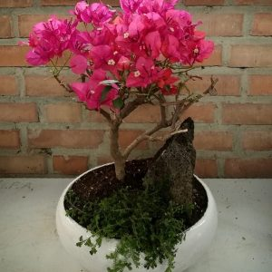
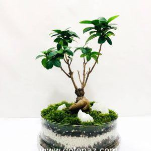
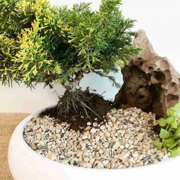

220 هزار تومان
| بونسای انار |
|
قیمت | 220 هزار تومان |
فقط 170 هزار توماان |
|---|---|---|
| جنس گلدان : سرامیکی | ||
| ارتفاع درختچه بونسای ۳۰ تا ۳۵ سانتی متر | ||
| ابعاد گلدان: قطر ۳۰ سانتی متر و ارتفاع ۱۱ سانتی متر | ||
نام محصول: بونسای انار مینیاتوری ، این بونسای میوه دار یکی از زیبا ترین محبوب ترین بونسای های مثمر در بین طرفداران بونسای ها محصوب میشود.
این نوع بنسای انار مینیاتوری برای نگهداری در گلدانهای با فضای کم، کوچک سازگار شده است که با سنگ صخره ای آتشفشانی تزیین و طراحی شده است.
این بن سای که دارای شکل های درخچه ای و سبز و جذاب هستند زیبایی خانه را دو چندان می کنند. خرید این بونسای انار زیبا را به افرادی که بدنبال بونسای با شرایط نگهداری نسبتا آسان و زیبا هستند. یا بدنبال هدیه ای منحصر به فرد با قیمت مناسب هستند توصیه میکنیم
بونسای انار : pomegranate bonsai
از خانواده ( تیره ) : punicaceae
ین گیاه بومی کشور ایران است و از سه هزار سال پيش در
این کشور کشت میشود که جزو درختان گرم سیری محسوب میشود. بونسای انار درختچه ای کوچکی است که ارتفاع آن تقریبا به ۳۰ الی ۴۰ سانتی متر میرسد.
این بنسای در فصل پاییز برگهای خود را از دست میدهد و خزان میکند. در فصل بهار دوباره شروع به جوانه زنی میکند به گل می نشیند که این گل ها به میوه انار تبدیل می شود.
شکل برگ ها:
برگ های این بونسای میوه رنگی سبز و شکلی سرنیره ای و تخم مرغی و کشیده دارد.
اندازه برگ های این بنسای بین ۱٫۵ تا ۲ سانتی متر دارد و عرض آنها ۰٫۵ سانتی متر است.
گل ها :
گل های این بنسای در فصل تابستان تشکیل میشود که قرمز رنگ و بی بو هستند.
طول گلها بین ۱ تا ۲ سانتی متر هست . شکلی زنگوله ای که جنسی براق و چرمی مانند دارد که در انتهای گل شکلی دندانه ای پیدا میکند که گلبرگ ها داخل قسمت دندانه ای گل قرار دارند.
میوه ها:
میوه ها قابل خوردن هستند که از اواخر تابستان تا اوایل زمستان بر روی بونسای مشاهده میشوند.
میوه های این بونسای انار در ابتدا سبز رنگ هستند که به مرور زمان قرمز رنگ میشوند.
بهترین مکان برای نگهداری این بونسای در فضای آزاد در مکانی سایه است. مثل تراس، بالکن و.. از این بونسای در خانه پشت پنجره های افتابگیر (جنوبی) هم میشود نگهداری کرد. در صورتی که نور داخل منزل شما کم است می توان روزانه برای چند ساعت در فضای آزاد قرار دهید مثل حیاط ، بالن ، تراس و… قرار داده شود تا نور گیاه تامین شود. همچنین برای تامین نیاز نوری این بنسای انار میتوانید از ال ای های مخصوص رشد گیاهان استفاده کنید
بونسای انار به کم ابی مقاوم است ولی خشکی طولانی مدت را تحمل نمی کند. بهتره ابیاری بطور منظم و بعد از خشک شدن خاک بنسای انجام شود. به طور معمول هفته ای دو بار بستگی به گرمای هوا و فصل نباز به ابیاری دارد. بهترین زمان آبیاری در صبح است.
اگر در داخل خانه از این بونسای میوه نگهداری میکنید دمای معمولی خانه مناسب است. این بن سای را به دور از وسایل گرماشی و سرمایشی قرار دهید. اگر در داخل فضای آزاد از این بونسای نگهداری میکنید در فصل تابستان مراقب گرمای شدید هوا و افتاب مستقیم باشید که به گیاه اسیب میرساد و در فصل زمستان حتما گیاهع را به داخل منزل یا گلخانه انتقال دهید
در فصل بهار از کود های مخصوص بونسای هر دو یا سه هفته یک بار استفاده کنید. در فصل تابستان از کود های مخصوص گل دهی هر دو هفته یک بار استفاده کنید.
این بونسای انار برای حفظ زیبایی و شکل گیری نیاز به هرس سالیانه دارد. بهترین زمان برای انجام هرس در اواخر زمستان یا اوایل بهار است. شما می توانید شاخه های مرده را یا خیلی بلند این گیاه را با قیچی تیز ببرید و شکلی درخچه مانند به بونسای بدهید.
ریزش برگ های این درختچه میتواند دلایل متعددی داشته باشد
اگر چه این گیاه یک درخت گرمسیری است که تحمل دمای بالا را دارد . ولی در صورتی که در تابستان برای زمان طولانی در آفتاب و هوای گرم بماند منجر به آسیب به برگ ها و ریزش آن ها می گردد.
معمولا بعد انتقال گیاه از گلخانه با داخل خانه گیاه با تغییر دما و شرایط آب و هوایی مواجه میشود که باعث ریزش برگ ها میشود و اگر کمی به گیاه فرصت دهید گیاه به شرایط جدیدی خود عادت میکند و شروع به برگ دهی میکند.
یکی دیگر از دلایل ریزش برگ بونسای تعویض گلدان آن است که بدلیل اسیب به ریشه های این اتفاق میافتد که در این صورت نیز باید به گیاه فرصت داد تا خود را ترمیم کند و دوباره شروه به برگ دهی کند.
کم ابی زیاد و یا ابیاری بیش از حد هم میتواند باعث ریزش برگ ها شود ابیاری را منظم کنید و بعد از خشک شدن خاک اقدام به ابیاری کنید.
اگر ریزش شکوفه های در اوایل فصل بهار باشد باعث آن حشرات مانند حشرات مکنده، شته ها و… باشند. گیاه را بررسی کنید و در صورد مشاهده حشرات با مشورت گیاه پزشک می توانید از حشره کش ها بصورت اسپری استفاده کنید. دمای زیاد و افتاب مستقیم ممکن است دلیل دیگر ریزش گلها باسد آبیاری نادرست هم در زمان گلدهی انار اثر سوء دارد و باعث ریزش گلها می شود.
بونسای میوه انار خود گرده افشان است و بدین معنی است که گلهای انار هم نر هستند و هم ماده.
درختچه های که در فضای آزاد نگهداری میشوند به صورت طبیعی توسط باد یا حشراتی که گردهها را از یک گل به گل دیگر حمل میکنند، گردهافشانی میشوند. اما اگر بونسای انار را در داخل خانه نگه میدارید، باید گرده افشانی را بصورت دستی انجام دهید
برای گرده افشانی کافیست با استفاده از یک قلم موی نازک تمیز و کوچک، بر روی پرچم موجود در مرکز گلها ضربه بزنید و از یک گل به گل دیگر بروید تا گرده در اطراف پخش شود
برای تکثیر این نژاد از بونسای میوه میتوانید از دانه های همین بونسای استفاده کنید. باید دانه های انار را از غلاف گوشتی که آنها را احاطه کرده است خارج کنید. سپس آنها را در خاک مخصوص کشت در عمق نیم سانتی متری بکارید. برای حفظ رطوبت بر روی بستر کشت پلاستیک بکشید و درمای معمولی خانه در جای با کمی نور غیر مستقیم خورشید قرار دهید. بعد از ۳۰ تا ۴۰ روز دانه ها شروع به سبز شدن میکنند. هر چند روز به آنها سر بزنید تا ببینید جوانه ها سالم هستند سپس دانه ها جوانه زده را به گلدان منتقل کنید. در هر گلدان دو تا سه دانه بکارید. میتوانید جوانه های ضعیف را پس از چند هفته که از جوانه زدنشان گذشت، بکنید و یا آنها را به گلدان دیگری منتقل کنید.
|  |  |  |  |
| بونسای کاج کونیکا | بونسای گل کاغذی | تراریوم جینسینگ | کاج دم روباهی |
|---|---|---|---|
| قیمت 150 هزار تومان | قیمت 250 هزار تومان | قیمت 180 هزار تومان | قیمت 190 هزار تومان |
تمام حقوق مادی و معنوی این وب سایت متعلق به سایت نیما است©2022 ((تمرین))